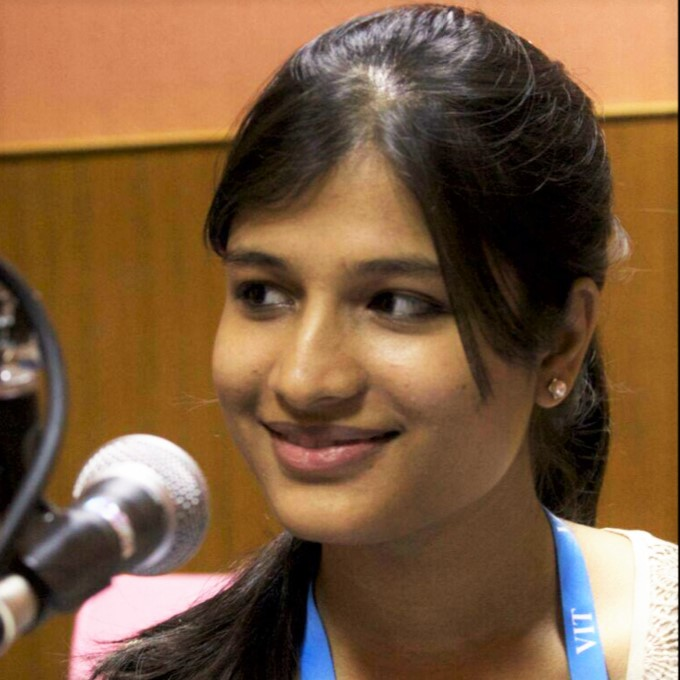

Abhijit Jana
Consultant at Microsoft
Abhijit Jana works as a Consultant at Microsoft. As a Consultant his job is to help customers to design, develop and deploy enterprise level secure solution using Microsoft Technology. Presently he is responsible for adopting and delivering world class solution with N+1 technologies, where he mainly lead the engagements on Universal Windows Platforms, Microsoft Azure, IoT, Cross Platform, Devices Apps development and HoloLens.
Apart from being a former Microsoft MVP (Most Valuable Professional), he is a Speaker, and author, as well as an avid Technology Evangelist. He has delivered sessions at prestigious Microsoft events like Tech Ready, TechED, Web Camps, Azure Camps, Community Tech Days, Virtual Tech Days and various developer conferences. He has authored the book "Kinect for Windows SDK Programming Guide".

Abhilash Urmaliya
Developer Consultant at Microsoft
Tech Consultant by profession, working with the Device Applications Development; writer/blogger and avid reader by passion.

Arun Kumar Surya Prakash
Associate Consultant at Microsoft
Arun Kumar Surya Prakash is a Developer Consultant at Microsoft. He is a Microsoft Certified Solution Developer for Store App Development, and an Azure Solution Developer.
His core skills are developing Windows Store App and Cross Platform App development using Xamarin.

Charul Pant
Associate Consultant at Microsoft
Charul Pant is an Associate Consultant at Microsoft Services Global Delivery. She is a part of the Modern Apps domain and is fascinated by Internet of Things. She is an avid writer as well and blogs frequently on social issues.
She aims at creating products and services where technology can be used to solve social problems.

Krishna Chaitanya
Security Consultant at Microsoft
Krishna Chaitanya Telikicherla works as a Security Consultant at Microsoft Services Global Delivery. He is a part of InfoSec SDL (Security Development Lifecycle) team and helps development teams in building secure solutions for Microsoft's customers. His primary work revolves around SDL activities namely - Threat Modeling & Security Design Review, Security Code Review, Security Testing and Security Deployment Review. He also gives security training to development teams and assists them in implementing security controls in their projects. Prior to joining Microsoft he worked as a Security Researcher at Infosys R&D Labs, while pursuing M.S by Research at IIIT-Hyderabad in parallel.
Krishna has been an avid tech community enthusiast, blogger and has been awarded Microsoft MVP award for 5 consecutive years (2010-2014) for his contributions. He is an active contributor/speaker in developer (MUGH) as well as security (NULL) communities. He loves to build/break/fix code and loves engaging in deep technical discussions both online & offline.

Pranav Ainavolu
Senior Developer at RealPage
Pranav is a Software Engineer by profession and a geek at heart. He is working as Senior Developer with RealPage Inc. He loves exploring new technologies and working on algorithmic problems. He is core member of Microsoft User Group Hyderabad.
He is passionate about technology, meetups and presentations. Currently he is building next generation apps for RealPage using Angular JS and other front-end technologies.
Ravi Kiran
Senior Engineer at Innominds
Rabi Kiran (a.k.a Ravi) is a developer, blogger, author, speaker and a meetup organizer. He works as a Senior Engineer at Innominds. He puts his thoughts on technology on his blog, regularly writes for DotNetCurry magazine and for SitePoint. He is an organizer and a frequent speaker at the ngHyderabad meetup group. He works on and plays a lot with the modern front-end JavaScript frameworks. He equally enjoys exploring the latest happenings in the .NET world.
Ravi has been awarded with the Microsoft MVP award for last two years in the category of Visual Studio and Development. He is also a DZone MVB and a SitePoint ambassador.

Shravan Kumar Kasagoni
Senior Developer at RealPage
Shravan Kumar Kasagoni is a developer, gadget freak, community leader, technology evangelist, blogger, speaker and author. He is working as a Senior Developer with RealPage Inc. He is responsible for design and development of RESTful APIs, single page web applications and enterprise cloud applications. Prior to RealPage he worked with Thomson Reuters and Pramati Technologies. His expertise includes different cloud technologies, Modern JavaScript frameworks and many front-end technologies.
He is a core member of Microsoft User Group Hyderabad. As a community leader he organizes and manages different user group and community related activities like conducting monthly community meetups and events, presentations, technical discussions and code camps. He also actively contributes to other open source communities. He is a regular speaker at many conferences, technical events, Microsoft events and local user group meetups.
He has been awarded Microsoft's prestigious Most Valuable Professional (MVP) title for last 5 years in a row under Visual Studio and Development Technologies category, for his community contributions in modern web technologies using ASP.NET and open source technologies.